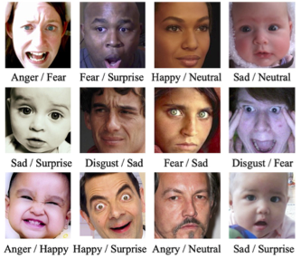
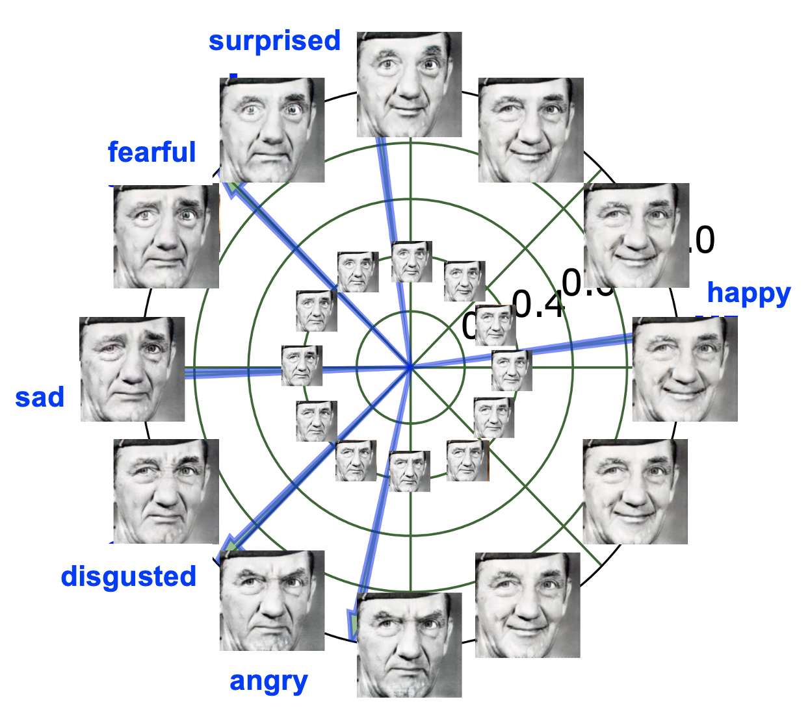

Zhiwu Huang
 I am an Assistant Professor of Computer Science in the School of Computing and Information Systems at Singapore Management University (SMU). Before coming to Singapore, I worked as a Guest/Postdoc Researcher with Prof. Luc Van Gool in Computer Vision Lab at ETH Zurich. My SAVG (SMU Autonomous Vision Group) researches autonomous visual computing that aims for making machines to learn the visual world, all by themselves. Our current research focuses on visual deepfake, affective and behavior computing through automated machine learning on data, label, feature, neuron and task. Our ultimate quest is artificial general intelligence with both rational and emotional capabilities.
I am an Assistant Professor of Computer Science in the School of Computing and Information Systems at Singapore Management University (SMU). Before coming to Singapore, I worked as a Guest/Postdoc Researcher with Prof. Luc Van Gool in Computer Vision Lab at ETH Zurich. My SAVG (SMU Autonomous Vision Group) researches autonomous visual computing that aims for making machines to learn the visual world, all by themselves. Our current research focuses on visual deepfake, affective and behavior computing through automated machine learning on data, label, feature, neuron and task. Our ultimate quest is artificial general intelligence with both rational and emotional capabilities. I am looking for motivated and talented PhD students to join my research group. Please follow the instructions to reach me if you are interested.
Research Project (GitHub Group)
Visual Deepfake Computing
|
Source Code | TrailerFaces Dataset Sliced Wasserstein Generative Models. Jiqing Wu* , Zhiwu Huang*, Dinesh Acharya, Wen Li , Janine Thoma , Danda Pani Paudel , Luc Van Gool . (*indicates equal contributions).
In Computer Vision and Pattern Recognition (CVPR), 2019 . Paper Wasserstein Divergence for GANs. Jiqing Wu , Zhiwu Huang, Janine Thoma , Dinesh Acharya, Luc Van Gool . In European Conference on Computer Vision (ECCV), 2018 . Paper | Code Off-Policy Reinforcement Learning for Efficient and Effective GAN Architecture Search. Yuan Tian*, Qin Wang*, Zhiwu Huang, Wen Li, Dengxin Dai , Minghao Yang , Jun Wang , Olga Fink. (*indicates equal contributions) . In European Conference on Computer Vision (ECCV), 2020 . Paper | Code Efficient Conditional GAN Transfer with Knowledge Propagation across Classes. Mohamad Shahbazi , Zhiwu Huang, Danda Pani Paudel , Ajad Chhatkuli , Luc Van Gool . In Computer Vision and Pattern Recognition (CVPR), 2021. Preprint | Code |
|
Video Quality Mapping Challenge | Video Super-Resolution Challenge The Vid3oC and IntVID Datasets for Video Super Resolution and Quality Mapping. Sohyeong Kim, Guanju Li, Dario Fuoli , Martin Danelljan , Zhiwu Huang, Shuhang Gu , Radu Timofte . In International Conference on Computer Vision (ICCV) workshop, 2019 . Paper Divide-and-Conquer Adversarial Learning for High-Resolution Image and Video Enhancement. Zhiwu Huang, Danda Pani Paudel , Dario Fuoli , Guanju Li , Jiqing Wu , Radu Timofte , Luc Van Gool . arXiv preprint arXiv:1910.10455, 2019 . Paper NTIRE 2020 Challenge on Video Quality Mapping: Methods and Results. Dario Fuoli , Zhiwu Huang, Martin Danelljan, Radu Timofte and et al. In Computer Vision and Pattern Recognition (CVPR) workshop, 2020 . Paper AIM 2020 Challenge on Video Extreme Super-Resolution: Methods and Results. Dario Fuoli , Zhiwu Huang, Radu Timofte and et al. In European Conference on Computer Vision (ECCV) workshop, 2020 . Paper Dario Fuoli , Zhiwu Huang, Danda Pani Paudel , Luc Van Gool , Radu Timofte . An Efficient Recurrent Adversarial Framework for Unsupervised Real-Time Video Enhancement. arXiv preprint arXiv:2012.13033, 2020 . Paper |
Facial Affective Computing
|
Source Code | AFEW SPDData | TrailerAffect Dataset A Riemannian Network for SPD Matrix Learning. Zhiwu Huang, Luc Van Gool .
In Association for the Advancement of Artificial Intelligence (AAAI), 2017. Paper |
Code Building Deep Networks on Grassmann Manifolds. Zhiwu Huang, Jiqing Wu , Luc Van Gool . In Association for the Advancement of Artificial Intelligence (AAAI), 2018. Paper | Code Neural Architecture Search of SPD Manifold Networks. Rhea Sanjay Sukthanker, Zhiwu Huang, Suryansh Kumar , Erik Goron Endsjo, Yan Wu, Luc Van Gool . In International Joint Conference on Artificial Intelligence (IJCAI), 2021. Paper |
|  |  |
Facial Emotion Recognition with Noisy Multi-task Annotations. Siwei Zhang, Zhiwu Huang, Danda Pani Paudel , Luc Van Gool . In Winter Conference on Applications of Computer Vision (WACV), 2021 . Paper | Code GANmut: Learning Interpretable Conditional Space for Gamut of Emotions. Stefano D'Apolito, Danda Pani Paudel , Zhiwu Huang, Andres Romero Vergara , Luc Van Gool . In Computer Vision and Pattern Recognition (CVPR), 2021. Preprint | Code |
Skeletal Behavior Computing
|
Source Code | G3D LieGroupData Deep Learning on Lie Groups for Skeleton-based Action Recognition. Zhiwu Huang, Chengde Wan , Thomas Probst , Luc Van Gool .
In Computer Vision and Pattern Recognition (CVPR), 2017 . Paper |
Code | Spotlight Building Deep Networks on Grassmann Manifolds. Zhiwu Huang, Jiqing Wu , Luc Van Gool . In Association for the Advancement of Artificial Intelligence (AAAI), 2018. Paper | Code |
 |
Neural Architecture Search of SPD Manifold Networks. Rhea Sanjay Sukthanker, Zhiwu Huang, Suryansh Kumar , Erik Goron Endsjo, Yan Wu, Luc Van Gool . In International Joint Conference on Artificial Intelligence (IJCAI), 2021. Paper Extension: Neural Architecture Search on Lie Groups for Skeleton-based Action Recognition. Samuele Serafino, Zhiwu Huang, Suryansh Kumar , Luc Van Gool . Tech. Report (Semester Thesis), 2020. Paper |